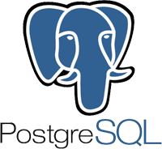

Skills
✅Data Cleaning & Automation
✅Spatial Analysis(QGIS, geopandas)
✅Project Management & Coordination, Monitoring and Evaluation
✅Agriculture and Natural Resource Management & Research
✅Data Analysis & Visualization(Excel, PostgreSQL, Python, Power BI)
✅Carbon Farming


